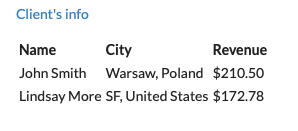
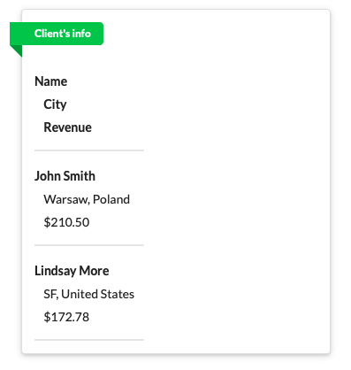
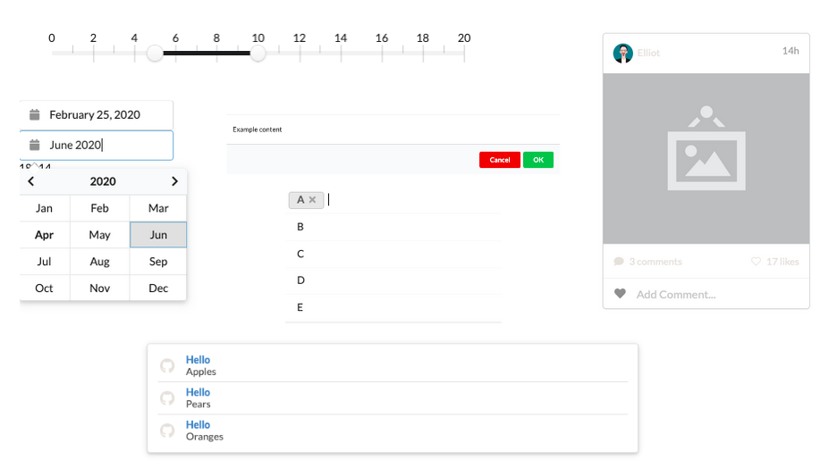

Semantic UI wrapper for Shiny


With this library it’s easy to wrap Shiny with Semantic UI components. Add a few simple lines of code and some CSS classes to give your UI a fresh, modern and highly interactive look.
master branch contains the stable version. Use develop branch for latest features.
Before

After

Component examples

The source code for Components live demo is located in /examples folder. To run it locally you will have to install:
-
devtools::install_github("Appsilon/highlighter")
Check out also our dashboard examples made with shiny.semantic library:
How to install?
You can install stable shiny.semantic release from CRAN repository:
install.packages("shiny.semantic")To install previous versions you can run:
devtools::install_github("Appsilon/shiny.semantic", ref = "0.1.0")How to use it?
Firstly, you will have to invoke shinyUI() with semanticPage() instead of standard Shiny UI definitions like e.g. fluidPage(). From now on forward all components can ba annotated with Semantic UI specific CSS classes and also you will be able to use shiny.semantic components.
Basic example for rendering a simple button. will look like this:
library(shiny) library(shiny.semantic) ui <- function() { shinyUI( semanticPage( title = "My page", suppressDependencies("bootstrap"), div(class = "ui button", uiicon("user"), "Icon button") ) ) } server <- shinyServer(function(input, output) { }) shinyApp(ui = ui(), server = server)
For better understanding it’s good to check Semantic UI documentation.
Note #1
At the moment you have to pass page title in semanticPage()
semanticPage(title = "Your page title", ...)Note #2
There are some conflicts in CSS styles between SemanticUI and Bootstrap. For the time being it’s better to suppress Bootstrap by caling: semanticPage( ... suppressDependencies("bootstrap"), ... )
Advanced
Using Semantic UI JavaScript elements
Some Semantic UI elements require to run a specific JS code when DOM document is ready. There are at least 2 options to do this:
- Use shinyjs
library(shinyjs)
...
jsCode <- " # Semantic UI componts JS "
...
ui <- function() {
shinyUI(
semanticPage(
title = "Your page title",
shinyjs::useShinyjs(),
suppressDependencies("bootstrap"),
# Your UI code
)
)
}
server <- shinyServer(function(input, output) {
runjs(jsCode)
# Your Shiny logic
})
shinyApp(ui = ui(), server = server)- Use
shiny::tags$script()
...
jsCode <- "
$(document).ready(function() {
# Semantic UI components JS code, like:
#$('.rating').rating('setting', 'clearable', true);
#$('.disabled .rating').rating('disable');
})
...
ui <- function() {
shinyUI(semanticPage(
title = "My page",
tags$script(jsCode),
suppressDependencies("bootstrap"),
# Your UI code
)
)
}
...
server <- shinyServer(function(input, output) {
# Your Shiny logic
})
shinyApp(ui = ui(), server = server)How to contribute?
If you want to contribute to this project please submit a regular PR, once you’re done with new feature or bug fix.
Changes in documentation
Both repository README.md file and an official documentation page are generated with Rmarkdown, so if there is a need to update them, please modify accordingly a README.Rmd file and use “Knit”. is enough.
Documentation is rendered with pkgdown
Troubleshooting
We used the latest versions of dependencies for this library, so please update your R environment before installation.
However, if you encounter any problems, try the following:
- Up-to-date R language environment
- Installing specific dependent libraries versions
-
shiny
install.packages("shiny", version='0.14.2.9001')
- Some bugs may be related directly to Semantic UI. In that case please try to check issues on its repository.
- Some bugs may be related to Bootstrap. Please make sure you have it suppressed. Instructions are above in How to use it? section.
Future enhacements
- create all update functions for input components to mimic shiny as close as possible
- add some glue code in dsl.R to make using this package smoother
- CRAN release
Appsilon Data Science
Get in touch dev@appsilon.com